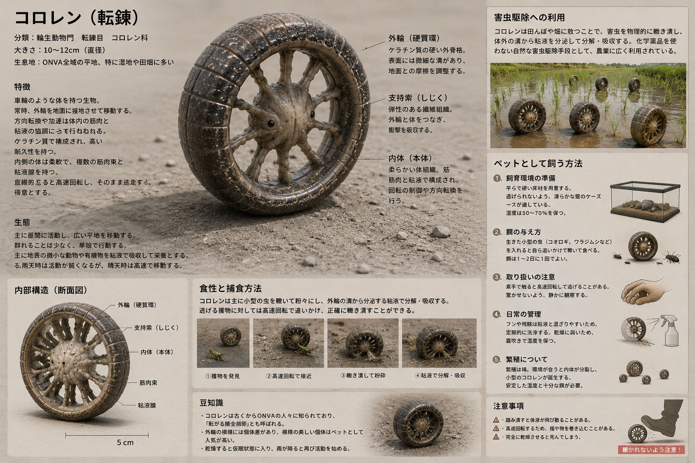
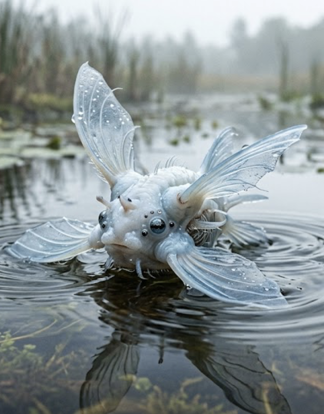
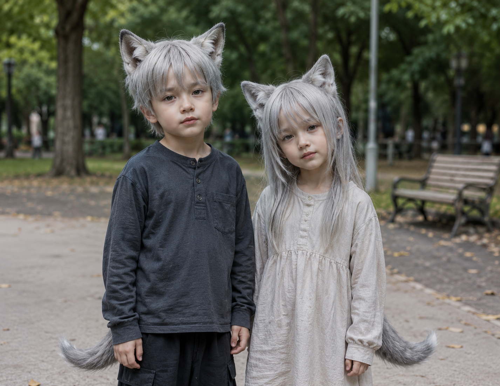

KOROREN
Common
VIEW DETAILS
1928年の建国以来、onva（ア゛ンヴァ）は合理主義に基づき環境を最適化してきました。
ここに記録されるのは、その最適化された環境に適応、あるいは共生する独自の生命群です。

KOROREN「回転」という最も効率的な移動手段を選択した小型生物。平坦なonvaの地表において、摩擦を最小限に抑えた高速移動を実現している。

SUIREN水面および浅瀬を主な活動域とする回転生物。羽根状の器官をプロペラとして機能させ、流体抵抗を推進力へ変換する。
人間に極めて近い構造を持つが、狼の特性を保持する。社会性が高く、onvaの最適化された社会システムにも積極的に適応している。

猫の特性を持つ亜人種。極めて高い警戒心と隠密性能を持ち、人間の視覚センサーによる直接的な「撮影」を回避する習性がある。